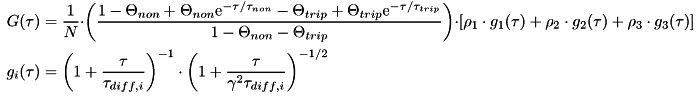

This is a 3D model of free diffusion. It may contain up to three independent
diffusing species (each with it's own diffusion time) and up to two
non-diffusing species.
The first non-diffusing component is
called
triplet component, as it is most commonly used to fit the triplet
fraction of the sample. As you can see from the formular of the model
the non-diffusing portions of the sample are modeled as exponential
decay terms.
This model may calculate
the diffusion coefficient from the diffusion times if you provide the
width/diameter wxy,Laser of
the laser beam in the xy plane (the optical axis is assumed to be in z
direction, i.e. perpendicular to the xy plane).
For the calculation it used this approximate equation: